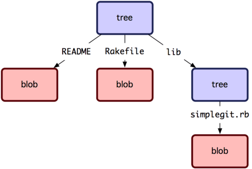
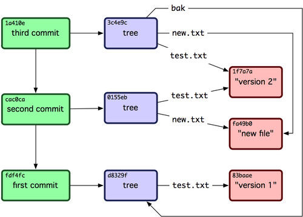

git internals
Created by Piotr Jasiun
"First, if it isn’t yet clear, Git is fundamentally a content-addressable filesystem with a VCS user interface written on top of it."
Porcelain
- git commit
- git checkout
- git add
- git merge
- git reset
- git stash
- git pull
- git rebase
- ...
Plumbing
- git hash-object
- git cat-file
- git write-tree
- git mktree
- git update-index
- git commit-tree
- git symbolic-ref
- git rev-parse
- ...
.git
- branches/ - not used
- config
- description - only used by the GitWeb program
- HEAD
- hooks/ - client- or server-side hook scripts
- index
- objects/
- refs/
- info/ - global exclude file that you don’t want to track in a .gitignore file
Git Objects: Blob and Tree

Git Objects: Commit

Git Objects: Commit

References

- HEAD, branches (local and remote) and tags are files with commits hashes,
- annotated tags are obeject (like commit or blob),
- HEAD could be a reference to the branch:
ref: refs/heads/master
Remotes
[remote "origin"]
url = git@github.com:schacon/simplegit-progit.git
fetch = +refs/heads/*:refs/remotes/origin/*
Packfiles
- git gc - garbage collection,
- .idx and .pack files,
- one snapshots and diffs,
- repacking,
- smaller than SVN.
Summary
- whole repo is it the .git directory,
- git works like a filesystem or NoSQL database,
- every commit contains files, not diffs,
- HEAD, branches and tags are references to commits,
- if you need you can become a plumber.